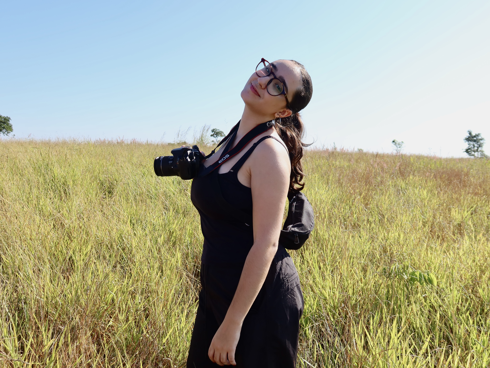
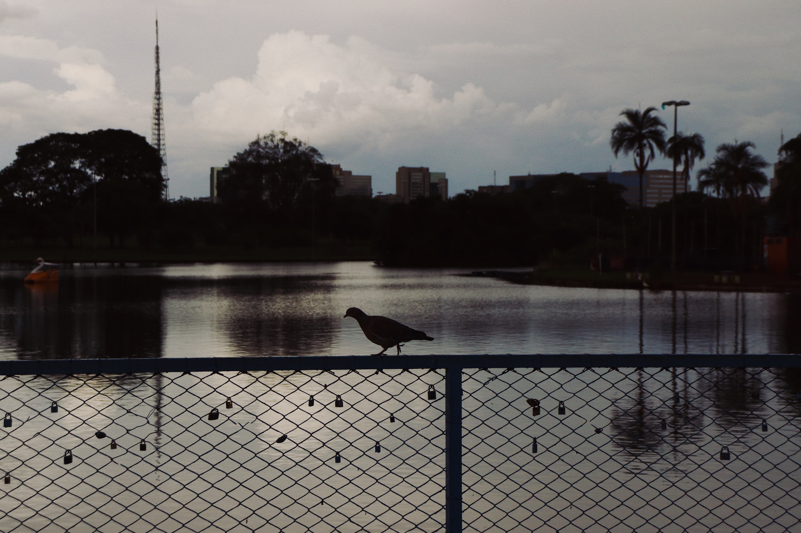
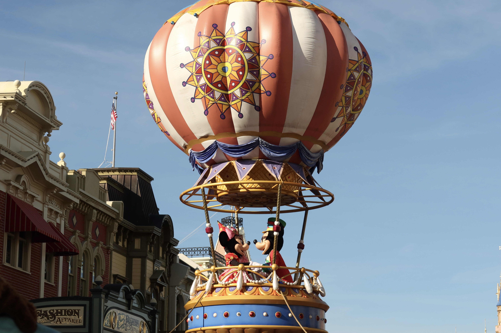

Este site reúne e compartilha um pouco do meu trabalho como estudante de Cinema e Audiovisual e futura profissional da área.
SOBRE
Me chamo Lara Rosa Veloso e sou estudante de Cinema e Audiovisual na Escola Superior de Propaganda e Marketing (ESPM). Minha maior paixão é a fotografia, através deste site pretento mostrar meus trabalhos até então realizados, desde fotografias still, até vídeos e curta-metragens, caso você se interesse pelo meu trabalho, pode entrar em contato pela aba "contato".

FOTO STILL
Minhas fotografias stills são de estilos diversos, aqui estão alguns exemplos dos meus meus clicks favoritos.


VÍDEOS
"Um ato de amor (ou de dor...)" foi um documentário poético produzido para o 1° semestre de Cinema e Audiovisual da ESPM. O objetivo era a realização de um documentário de 1 minuto sobre o tema "comida". Meu projeto foi feito com base na distorção de imagem e a beleza inalcançável na era da tecnologia.
“Caruara” foi um projeto para a matéria “Laboratório de Realização” do 2º semestre da faculdade de cinema. O objetivo era um curta-metragem de terror, nosso grupo realizou com base na paralisia do sono!
“(Des)encontro” foi uma produção para a matéria “Historia da Arte Audiovisual” do 1º semestre de Cinema e Audiovisual na ESPM.
O objetivo era a realização de uma videoarte. Minha escolha foi um filme utilizando de projeções, inspirado no estilo “Vídeo Mapping”.
“Há muito tempo (atrás)” foi uma produção para a matéria Ciclos de Produção I do primeiro semestre de Cinema e Audiovisual. Eu tive o prazer de fazer parte da equipe como 1ª Assistente de Direção.